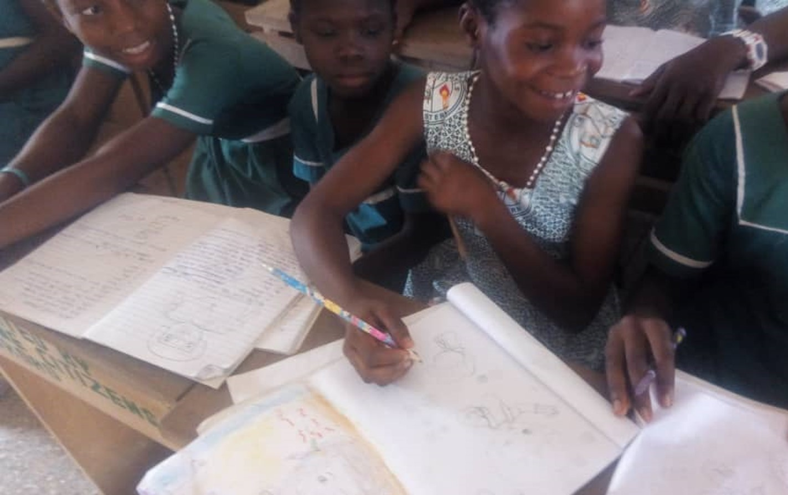

Sophie zeichnete ihre Freundinnen, weil sie mit ihnen glücklich ist.


Lucy zeichnete einen Strand und ein Boot mit der Aufschrift "peace & love" Die Bedeutung hinter dem Bild ist beeindruckend, da es sich auf die aktuelle weltweite Situation bezieht: Es zeigt, wie wie wichtig es ist über Frieden und Liebe nachzudenken.


Isabella zeichnete alle Lebensbereiche, die sie glücklich machen: Ihre Hobbies, Familie, Freunde und außerdem gute Noten.


Anabel zeichnete ihre Freundin und sich selbst in farbenfrohen Kleidern.